[8-2] DMA数据转运与DMA+AD多通道 — 学习笔记
- 本集定位：这是模块 8（DMA）的代码课，写两个程序——①
8-1 DMA数据转运（存储器→存储器，DataA→DataB）②8-2 DMA+AD多通道（ADC 扫描 + DMA，四路自动进数组）。结构是 开头 1:00–9:30 一段「存储器映像小实验」（作者扩展内容）+ 程序一 + 程序二。理论（DMA 定义/框图/基本结构/请求映像/宽度对齐）全在 P23 [8-1]，本集只套用结论、不重复推导；片尾 53:00「本节课就到这里，我们下节再见」，没有下集名。
一句话结论
本集把 [8-1] 的 DMA 理论落成两个工程。开头小实验用实验验证了 P23 的存储器映像：普通变量 &aa = 0x20000000（SRAM 区）；加 const 后地址变 0x08000DF8（Flash 区）——所以大批不需要改的数据（字库、查找表）加 const 可以省 SRAM；外设寄存器地址是固定的，(uint32_t)&ADC1->DR = 0x4001244C（ADC1 起始 0x40012400 + DR 偏移 0x4C），而 ADC1 本质是 ((ADC_TypeDef *)ADC1_BASE)，基地址链 PERIPH_BASE(0x40000000) + 0x10000 = APB2 基地址 → +0x2400 = ADC1 基地址，结构体成员顺序与寄存器偏移一一对应——所以「结构体指针 + ->」就等价于「基地址 + 偏移」。程序一 8-1 DMA数据转运 由 OLED 工程复制、新建 MyDMA.c/MyDMA.h（放 System 组，名字避免与库函数重名）：MyDMA_Init(uint32_t AddrA, uint32_t AddrB, uint16_t Size) 里先 RCC_AHBPeriphClockCmd(RCC_AHBPeriph_DMA1)（DMA 挂 AHB），再配 DMA_Init 结构体 11 个成员——PeripheralBaseAddr = AddrA、PeripheralDataSize/MemoryDataSize = Byte、PeripheralInc/MemoryInc = Enable（数组要自增）、DIR = PeripheralSRC（外设站点作源）、BufferSize = Size（就是传输计数器）、Mode = Normal（单次、不重装）、M2M = Enable（软件触发）、Priority = Medium——最后 DMA_Cmd(DMA1_Channel1, DISABLE) 先不使能；MyDMA_Transfer 里 先失能 → DMA_SetCurrDataCounter 重写计数器 → 使能 → while 等 DMA1_FLAG_TC1 → 手动 DMA_ClearFlag（标志位必须手动清）。现象：DataA 地址 0x20000002、DataB 地址 0x20000006（前面的 2 字节被全局变量 MyDMA_Size 占了，不是 DMA 造成的），转运后 DataB 变成和 DataA 一样、源端 DataA 不变；给 DataA 加 const 就能把 Flash 的数据搬到 SRAM（此时 DataA++ 必须删掉）。程序二 8-2 DMA+AD多通道 由上一集 AD 多通道工程复制：ADC 侧把序列 1～4 填成通道 0～3、ADC_ScanConvMode = ENABLE、ADC_NbrOfChannel = 4；DMA 侧参数是 PeripheralBaseAddr = (uint32_t)&ADC1->DR、PeripheralDataSize = HalfWord、PeripheralInc = Disable（始终读同一个 DR）、MemoryBaseAddr = (uint32_t)AD_Value、MemoryDataSize = HalfWord、MemoryInc = Enable、BufferSize = 4、Mode = Normal（先）、M2M = Disable（用硬件触发），而且通道必须用 DMA1_Channel1——ADC1 的硬件触发只接在 DMA1 通道 1 上；还要 ADC_DMACmd(ADC1, ENABLE) 打开 ADC 的 DMA 请求输出。本集给了两套最终代码：① 单次扫描 + 单次转运（void AD_GetValue(void)：失能 DMA → 重写计数器 4 → 使能 → 软件触发 ADC → 等 TC1 → 清标志，然后直接读 AD_Value[0～3]）；② 连续扫描 + 循环转运（ADC_ContinuousConvMode = ENABLE、DMA_Mode_Circular、ADC 触发放到初始化末尾、删掉 AD_GetValue，主循环直接读数组）——两个版本别混用。最后作者点题：硬件外设互相配合形成网状结构（定时器 → ADC → DMA），软件什么都不用做也不进中断；存储器 → 外设（如串口发送）本集没做，留给大家自己研究。
0. 本集定位：代码课，理论全在 [8-1] P23
- 本集是纯代码课：全程 Keil —— 接线 → 复制工程 → 小实验 → 写 MyDMA 模块 → 写程序一 → 复制改程序二 → 编译下载看现象；只有两处闪过 PPT（P23 的存储器映像表、DMA1 请求映像），没有新的理论推导。
- 结构：开场小实验（1:00–9:30，作者扩展） → 程序一
8-1 DMA数据转运（9:30–40:30） → 程序二8-2 DMA+AD多通道（40:30–53:09）。 - 理论引用 P23 即可：DMA 基本结构（两站点 3 参数、方向、计数器、重装、M2M、开关、三条件）、DMA1 请求映像、表57 数据宽度与对齐，本笔记不再推导，详细看
notes/stm32-23-DMA直接存储器存取.md。 - 片尾说明：本集覆盖了存储器到存储器、外设到存储器两种情况；存储器到外设（串口发送）本集没讲，留给自学；片尾只有「我们下节再见」，无下集名。
1. 片头与工程准备
- 接线图
8-1 DMA数据转运：这个电路和 OLED 显示屏的电路是一样的——因为数据转运都是在 STM32 内部进行的，所以外围电路只加一个 OLED 显示一下就行了，其他模块都不需要；面包板上也就是一个 OLED 显示屏的电路。 - 回到工程文件夹，复制 OLED 显示屏的工程，改名
8-1 DMA数据转运；把原来的代码先删掉，编译一下。
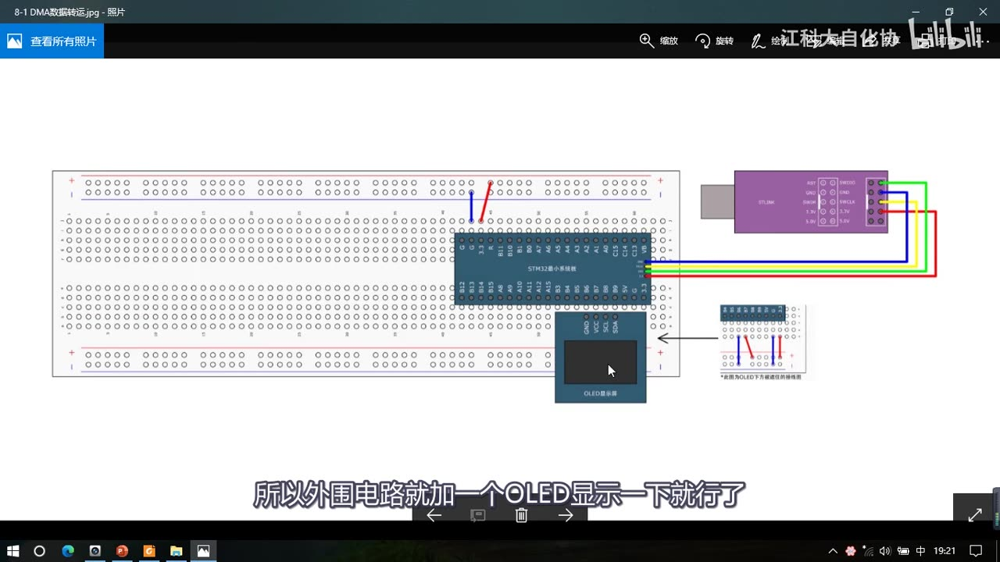
图 1：接线图 8-1 DMA数据转运——面包板上只有 STM32 最小系统板与 OLED 显示屏（加 ST-Link），没有任何其他外设；字幕「所以外围电路就加一个OLED显示一下就行了」
2. 扩展小实验：存储器映像的真实验证（1:00–9:30）
正式写 DMA 代码之前，作者先花几分钟做个小实验，验证 P23 讲的存储器映像——「看一下我们定义的数据，到底是不是真的存储在了相应的地址空间里」。
2.1 变量：地址在 SRAM 区
- 在上面随便定义一个变量
uint8_t aa = 0x66;，主函数里OLED_ShowHexNum(1, 1, aa, 2)显示内容，再显示它的地址； - 取地址用
&：&aa取到的是地址，地址一般都习惯用十六进制表示；取地址之后本来应该存在指针变量里，如果想直接当数字显示，要在前面加强制类型转换(uint32_t)——不加强转就是指针跨级赋值，编译会报警告；显示长度给 8（8 个十六进制数就是 32 位，32 位系统的地址都是 32 位）； - 现象：第一行显示内容
66；第二行显示aa被存储的地址2000 0000——20 开头就说明它在 SRAM 区； - 具体地址由编译器决定：因为 SRAM 区目前还没什么东西，所以编译器就把这个变量放在了 SRAM 区的第一个位置（
0x20000000）。
2.2 常量：加 const 就到 Flash 区
- 在变量前面加
const（C 语言关键字，表示常量）：被 const 修饰的只能读、不能写——而 Flash 里的数据也是只能读不能写，所以 const 和 Flash 就联系起来了：在 STM32 中，用 const 定义的变量存放在 Flash 里（严格说应该叫「常量」）； - 常量只能在定义的时候给值，程序里再给它赋值会编译报错（「不能给 const 常量赋值」）；
- 现象：地址变成
0800 0DF8（08 开头）——对照 PPT 表就知道它被存到了 Flash；地址尾部有些偏移，不像 SRAM 那样直接安排在第一个位置，因为 Flash 前面还有程序代码，编译器只能把常量安排得靠后一些； - 什么时候用常量：程序中出现一大批数据、并且不需要更改时（查找表、字库数据等），定义成常量能节省 SRAM 空间；比如
OLED_Font.h里 OLED 显示英文的字库数组非常长且不需要修改，加一个const就能放到 Flash 里——如果把 const 去掉，程序功能不受影响，但 SRAM 里会浪费和这个数组一样大的空间（数组很大时就要考虑 SRAM 够不够）。
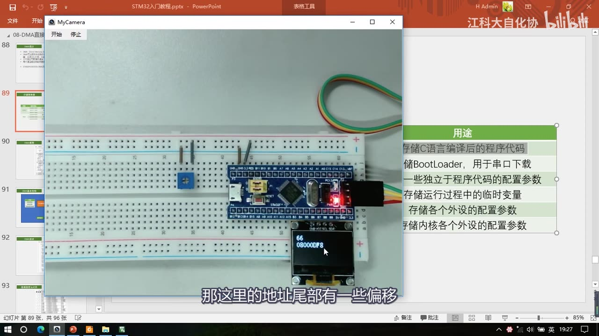
图 2：小实验画面——MyCamera 里 OLED 显示 66（内容）与 08000DF8（地址，08 开头即 Flash 区），右侧是 PPT 存储器映像表的「用途」列（存程序代码/BootLoader/配置参数/临时变量/外设配置参数/内核外设配置参数）；字幕「那这里的地址尾部有一些偏移」
2.3 外设寄存器地址：&ADC1->DR = 0x4001244C
- 变量/常量的地址由编译器确定、不固定；但外设寄存器的地址是固定的，在手册里都能查到；
- 程序里可以用结构体很方便地访问寄存器，比如要访问 ADC1 的 DR 寄存器就写
ADC1->DR；把这个寄存器取地址显示出来，得到4001 244C——40 开头，对照 PPT 表就是外设寄存器区域； - 这个地址怎么来的：打开手册第 2 章「存储器映像」，ADC1 的起始地址是
0x40012400；再打开 ADC 章节的寄存器总表，查到 ADC_DR 的偏移是0x4C——起始地址 + 偏移 = 寄存器实际地址，即0x40012400 + 0x4C = 0x4001244C，和 OLED 显示的一样。所以想算某个寄存器的地址：先查它所在外设的起始地址，再查寄存器总表里的偏移，加起来。
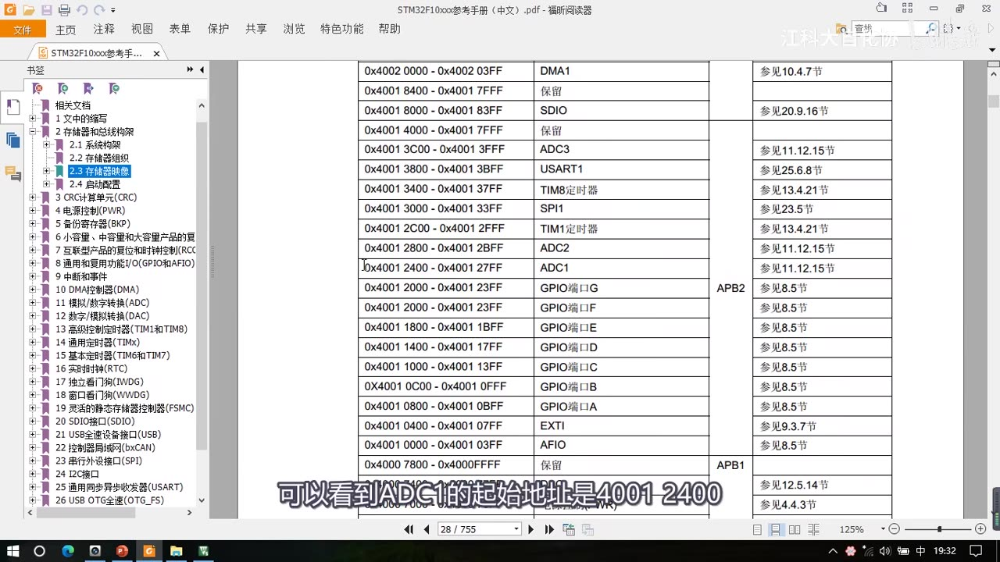
图 3：参考手册 2.3 存储器映像表——0x4001 2400～0x4001 27FF 是 ADC1（属 APB2），同表还有 ADC2/ADC3、TIM8、SPI1、USART1 与 GPIOA～G 等外设；字幕「可以看到ADC1的起始地址是4001 2400」
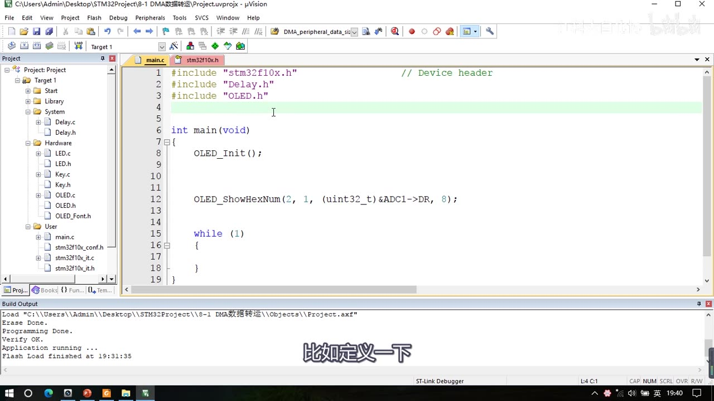
图 4：main.c 里验证寄存器地址——OLED_ShowHexNum(2, 1, (uint32_t)&ADC1->DR, 8);（第 12 行）——显示 ADC1 的 DR 寄存器地址；字幕「比如定义一下」
2.4 结构体为什么能访问寄存器
- 在
ADC1处右键跳转到定义：ADC1就是((ADC_TypeDef *) ADC1_BASE)——左边是强制类型转换（把ADC1_BASE转为ADC_TypeDef类型的指针），右边ADC1_BASE就是 ADC1 的基地址（起始地址）； - 基地址链（一层层转定义）：
ADC1_BASE = APB2PERIPH_BASE + 0x2400；APB2PERIPH_BASE = PERIPH_BASE + 0x10000；PERIPH_BASE = 0x40000000——所以0x40000000 + 0x10000 + 0x2400 = 0x40012400，正是手册表里 ADC1 的基地址（顺便也能看到 SRAM 基地址0x2000、Flash 基地址0x0800，和前面讲的都一致）； - 偏移怎么实现的：把结构体定义跳出来看，里面是依次定义的各个寄存器（SR、CR1、CR2……），这个结构体成员的顺序和手册里寄存器实际存放的顺序是一一对应的——所以定义一个结构体指针、让指针指向这个外设的起始地址，结构体的每个成员就正好映射到实际的每个寄存器：内存
0x40012400开始放的是 ADC1 的寄存器（顺序 SR、CR1、CR2…），结构体在内存里的布局也是一样，两者完美重合——再访问某个成员就相当于访问那个寄存器； - 所以
ADC1->DR的意思就是：ADC1是结构体指针、指向 ADC1 外设起始地址，访问成员相当于加地址偏移，起始地址 + 偏移 = 指定的寄存器；因为是结构体指针所以用->取成员； - 也可以更直接：
#define ADC1_DR 0x4001244C，把地址强转为uint32_t指针，再用*取内容——效果和结构体访问一模一样（作者吐槽库函数把访问寄存器做得挺麻烦）。
3. 程序一：8-1 DMA数据转运
3.1 定义数组与新建 MyDMA 模块
- 定义
uint8_t DataA[] = {0x01, 0x02, 0x03, 0x04};（源端数组，4 个数据）和uint8_t DataB[] = {0, 0, 0, 0};（目的数组，「如果不写 0，全局变量默认也是 0」）； - 任务就是初始化 DMA，让 DMA 把 DataA 的数据转运到 DataB 里；
- 给 DMA 建模块：DMA 不涉及外围硬件电路，所以可以在
System分组里添加，模块名叫MyDMA——「为了防止与库函数里面的 DMA 重复，我就起了个 MyDMA」； - 在
MyDMA.c里写初始化函数void MyDMA_Init(void)（后面改成带参数的版本）。
3.2 编程思路与库函数
初始化步骤对照 P23 的基本结构图：
- RCC 开启 DMA 的时钟；
- 调用
DMA_Init，用结构体配置各个参数——外设/存储器站点的起始地址、数据宽度、地址是否自增、方向、传输计数器、是否自动重装、选择触发源，另外还有通道优先级（图里没画）；如果选择硬件触发，不要忘了在对应外设里调用XXX_DMACmd开启触发信号输出； - 开关控制
DMA_Cmd：给指定通道使能； - 运行过程中转运完成、传输计数器清 0 后，想再赋值就先 DMA 失能 → 写传输计数器 → 再使能。
dma.h 里的库函数不多：DMA_DeInit、DMA_Init、DMA_StructInit、DMA_ITConfig（中断输出使能）这些老朋友，加上两个重点——DMA_SetCurrDataCounter（给传输计数器写数据）、DMA_GetCurrDataCounter（返回计数器当前值，可以看还剩多少没转运），最后是获取标志位状态、清除标志位、获取中断状态、清除中断挂起位。
3.3 MyDMA_Init 完整代码与 11 个成员
#include "stm32f10x.h"
uint16_t MyDMA_Size; /* 留给 MyDMA_Transfer 重新写计数器用 */
void MyDMA_Init(uint32_t AddrA, uint32_t AddrB, uint16_t Size)
{
MyDMA_Size = Size;
/* DMA 是 AHB 总线的设备，用 AHB 开启时钟 */
RCC_AHBPeriphClockCmd(RCC_AHBPeriph_DMA1, ENABLE);
DMA_InitTypeDef DMA_InitStructure;
DMA_InitStructure.DMA_PeripheralBaseAddr = AddrA; /* 外设站点起始地址 */
DMA_InitStructure.DMA_PeripheralDataSize = DMA_PeripheralDataSize_Byte; /* 字节（uint8_t） */
DMA_InitStructure.DMA_PeripheralInc = DMA_PeripheralInc_Enable; /* 地址自增 */
DMA_InitStructure.DMA_MemoryBaseAddr = AddrB; /* 存储器站点起始地址 */
DMA_InitStructure.DMA_MemoryDataSize = DMA_MemoryDataSize_Byte; /* 字节 */
DMA_InitStructure.DMA_MemoryInc = DMA_MemoryInc_Enable; /* 地址自增 */
DMA_InitStructure.DMA_DIR = DMA_DIR_PeripheralSRC; /* 外设站点作为源 */
DMA_InitStructure.DMA_BufferSize = Size; /* 传输计数器 */
DMA_InitStructure.DMA_Mode = DMA_Mode_Normal; /* 单次，不自动重装 */
DMA_InitStructure.DMA_M2M = DMA_M2M_Enable; /* 软件触发 */
DMA_InitStructure.DMA_Priority = DMA_Priority_Medium; /* 中等优先级 */
DMA_Init(DMA1_Channel1, &DMA_InitStructure);
DMA_Cmd(DMA1_Channel1, DISABLE); /* 先不使能，等 Transfer 调用 */
}
- 时钟：
RCC_AHBPeriphClockCmd(RCC_AHBPeriph_DMA1, ENABLE);——DMA 是 AHB 总线的设备，所以要用 AHB 开时钟的函数；该参数分「互联型设备（F105/107）」和「其他设备」两张表，F103 用下面那张，选RCC_AHBPeriph_DMA1。 DMA_Init第一个参数是DMAy_Channelx：y选 DMA1/DMA2，x选通道（DMA1 是 1～7、DMA2 是 1～5）——这一个参数既选了哪个 DMA，也选了哪个通道；因为这里是存储器到存储器、用软件触发，通道可以任意选，给通道 1。- 11 个成员逐个对应基本结构图：前 6 个是两个站点的起始地址、数据宽度、是否自增；
DIR是传输方向（PeripheralDST= 外设作目的地/存储器→外设；PeripheralSRC= 外设作源/外设→存储器，本程序把 DataA 放外设站点、DataB 放存储器站点，所以选PeripheralSRC）；BufferSize就是传输计数器（取值 0～65535，源码里直接赋给计数器寄存器）；Mode就是是否自动重装（Circular循环/Normal正常——注释里明确写「循环模式不能应用在存储器到存储器的情况」，即自动重装与软件触发不能同时用）；M2M就是硬件触发/软件触发（Enable= 软件触发，Disable= 硬件触发）；Priority是通道软件优先级（VeryHigh/High/Medium/Low，只有一个通道时随便给）。 - 参数提取成形参：因为数组地址由编译器分配、不固定，一般不写绝对地址，而是通过数组名获取地址；把地址和长度提取成
uint32_t AddrA, uint32_t AddrB, uint16_t Size三个形参，初始化时想转运哪个数组就传哪个。 - 最后
DMA_Cmd(DMA1_Channel1, DISABLE)：DMA 转运要同时满足三个条件（计数器>0、有触发信号、DMA 使能）；此时前两个条件其实已满足（Size>0、软件触发一直有信号），只差使能——所以初始化后先不工作，等Transfer调用再启动。
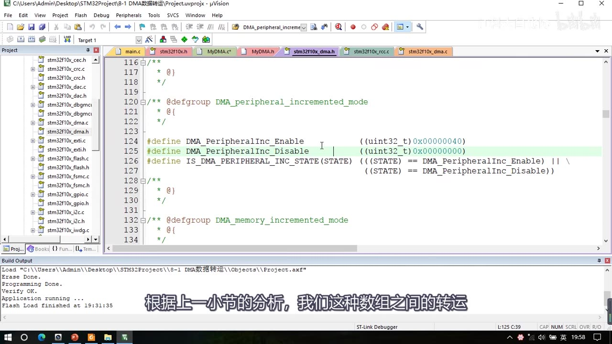
图 5：stm32f10x_dma.h 里地址自增相关的宏——#define DMA_PeripheralInc_Enable ((uint32_t)0x00000040)、#define DMA_PeripheralInc_Disable ((uint32_t)0x00000000)（下面还有 IS_DMA_PERIPHERAL_INC_STATE 判断宏与 DMA_memory_incremented_mode 分组）；字幕「根据上一小节的分析，我们这种数组之间的转运」
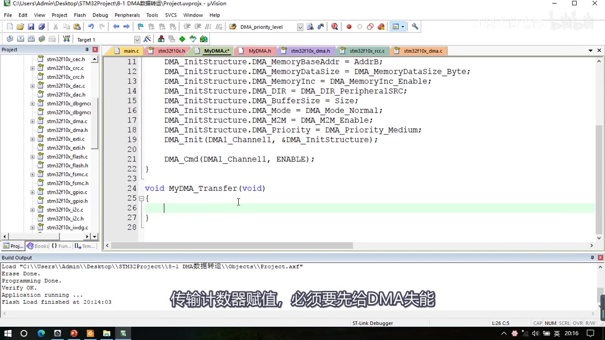
图 6：MyDMA.c 初始化尾部——DMA_MemoryBaseAddr = AddrB、MemoryDataSize_Byte、MemoryInc_Enable、DMA_DIR_PeripheralSRC、BufferSize = Size、Mode_Normal、M2M_Enable、Priority_Medium、DMA_Init(DMA1_Channel1, …)，以及 DMA_Cmd(DMA1_Channel1, ENABLE);（此刻还是 ENABLE，下面要改成 DISABLE），再往下是空的 MyDMA_Transfer；字幕「传输计数器赋值，必须要先给DMA失能」
3.4 MyDMA_Transfer：重复转运
void MyDMA_Transfer(void)
{
DMA_Cmd(DMA1_Channel1, DISABLE); /* 写计数器前必须先失能 */
DMA_SetCurrDataCounter(DMA1_Channel1, MyDMA_Size); /* 重新写传输计数器 */
DMA_Cmd(DMA1_Channel1, ENABLE); /* 三个条件重新满足，开始转运 */
while (DMA_GetFlagStatus(DMA1_FLAG_TC1) == RESET); /* 等待转运完成 */
DMA_ClearFlag(DMA1_FLAG_TC1); /* 标志位必须手动清除 */
}
- 为什么要这个函数：初始化之后若立刻使能，就是「初始化即转运一次、然后 DMA 停止」；如果 DataA 又变了、想再转运一次，就必须重新给传输计数器赋值——所以封装一个
MyDMA_Transfer，调用一次就再次启动一次转运； - 必须「先失能再写计数器」：
DMA_SetCurrDataCounter就是给传输计数器写数据，写之前必须DMA_Cmd(...DISABLE)（手册规定）； MyDMA_Size全局变量：Transfer里要用Size，但它和MyDMA_Init不在一个函数里、不能直接传参，所以在上面定义全局uint16_t MyDMA_Size;，初始化时把 Size 往全局变量也存一份；- 等待转运完成：用
DMA_GetFlagStatus查标志位——可选标志位有 4 类：全局标志、转运完成（TC）、转运过半（HT）、转运错误（TE），每个通道都有这 4 种；这里查 DMA1 通道 1 的转运完成标志DMA1_FLAG_TC1，加while (... == RESET)等待，没完成就一直循环； - 标志位必须手动清除：转运完成后调
DMA_ClearFlag(DMA1_FLAG_TC1);。
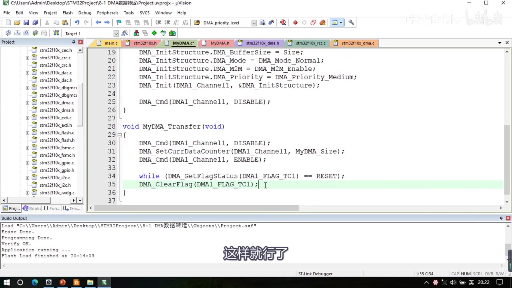
图 7：MyDMA.c 的 MyDMA_Transfer 完整实现——DMA_Cmd(DMA1_Channel1, DISABLE); → DMA_SetCurrDataCounter(DMA1_Channel1, MyDMA_Size); → DMA_Cmd(DMA1_Channel1, ENABLE); → while (DMA_GetFlagStatus(DMA1_FLAG_TC1) == RESET); → DMA_ClearFlag(DMA1_FLAG_TC1);（最后一行高亮），上方是初始化块末尾 DMA_Cmd(DMA1_Channel1, DISABLE);；字幕「这样就行了」
3.5 主函数、现象与 const 版
#include "stm32f10x.h"
#include "Delay.h"
#include "OLED.h"
#include "MyDMA.h"
uint8_t DataA[] = {0x01, 0x02, 0x03, 0x04};
uint8_t DataB[] = {0, 0, 0, 0};
int main(void)
{
OLED_Init();
MyDMA_Init((uint32_t)DataA, (uint32_t)DataB, 4);
OLED_ShowString(1, 1, "DataA");
OLED_ShowString(3, 1, "DataB");
OLED_ShowHexNum(1, 8, (uint32_t)DataA, 8); /* DataA 的地址 */
OLED_ShowHexNum(3, 8, (uint32_t)DataB, 8); /* DataB 的地址 */
while (1)
{
DataA[0]++; DataA[1]++; DataA[2]++; DataA[3]++; /* 变化源端数据 */
/* 显示转运前的 DataA（第 2 行）和 DataB（第 4 行） */
OLED_ShowHexNum(2, 1, DataA[0], 2); OLED_ShowHexNum(2, 4, DataA[1], 2);
OLED_ShowHexNum(2, 7, DataA[2], 2); OLED_ShowHexNum(2, 10, DataA[3], 2);
OLED_ShowHexNum(4, 1, DataB[0], 2); OLED_ShowHexNum(4, 4, DataB[1], 2);
OLED_ShowHexNum(4, 7, DataB[2], 2); OLED_ShowHexNum(4, 10, DataB[3], 2);
MyDMA_Transfer(); /* 调用一次转运一次 */
/* 再显示一次转运后的 DataA / DataB（位置同上，覆盖显示） */
OLED_ShowHexNum(2, 1, DataA[0], 2); OLED_ShowHexNum(2, 4, DataA[1], 2);
OLED_ShowHexNum(2, 7, DataA[2], 2); OLED_ShowHexNum(2, 10, DataA[3], 2);
OLED_ShowHexNum(4, 1, DataB[0], 2); OLED_ShowHexNum(4, 4, DataB[1], 2);
OLED_ShowHexNum(4, 7, DataB[2], 2); OLED_ShowHexNum(4, 10, DataB[3], 2);
Delay_ms(1000); /* 延时 1 秒方便观看 */
}
}
- 传参时
DataA直接写数组名（数组名就是地址，不用加取地址符），强转成uint32_t；第三个参数给 4（有 4 个数据，转运 4 次）。 - 现象：OLED 显示
DataA地址2000 0002、数据01 02 03 04；DataB地址2000 0006、数据00 00 00 00；转运后 DataB 变成01 02 03 04（与 DataA 一致），源端 DataA 不变。 - 地址为什么是
20000002而不是20000000：作者现场解释——模块里的全局变量MyDMA_Size被编译器分配到了 SRAM 开头的位置（占 2 字节），所以数组地址往后偏了 2 个字节；这是编译器分配的结果，不是 DMA 造成的。 - 扩展：把 Flash 的数据搬到 SRAM：在
DataA前面加const，让它定义到 Flash 里；此时下面DataA[0]++那几行必须删掉（const 数据不能改，否则编译报错）；下载后现象：DataA 的地址变成08开头（说明在 Flash 里），DataB 的数据和 DataA 一样，说明 Flash 的数据成功转运到了 SRAM。
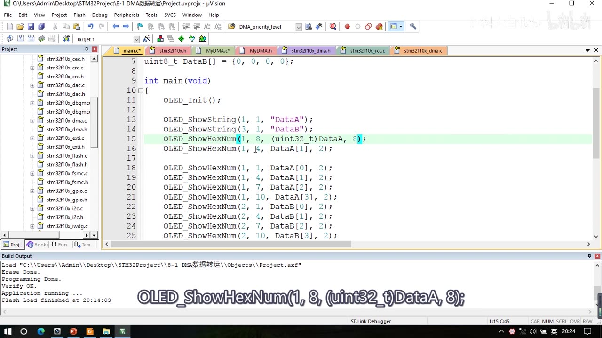
图 8：程序一 main.c 中间版本——OLED_ShowString(1, 1, "DataA")、(3, 1, "DataB")、OLED_ShowHexNum(1, 8, (uint32_t)DataA, 8);（高亮，显示地址），下面是第 1 行 DataA 的 0～3 号元素、第 2 行 DataB 的 0～3 号元素 的十六进制显示；字幕「OLED_ShowHexNum(1, 8, (uint32_t)DataA, 8);」
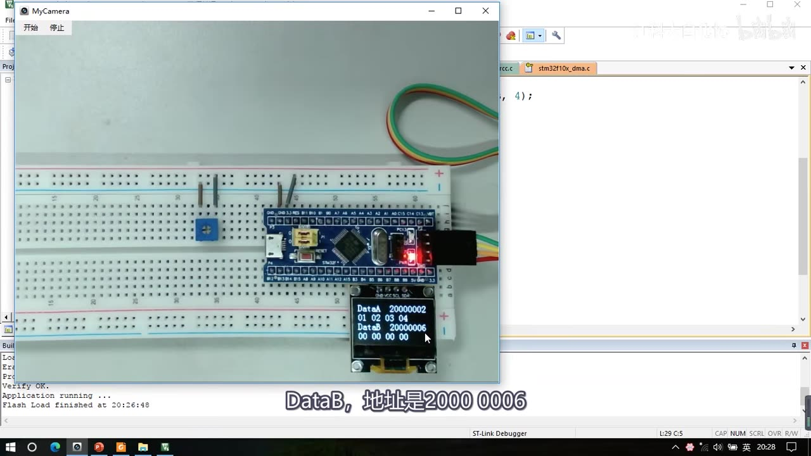
图 9：程序一现象（转运前）——OLED 四行：DataA 20000002 / 01 02 03 04 / DataB 20000006 / 00 00 00 00；字幕「DataB，地址是2000 0006」
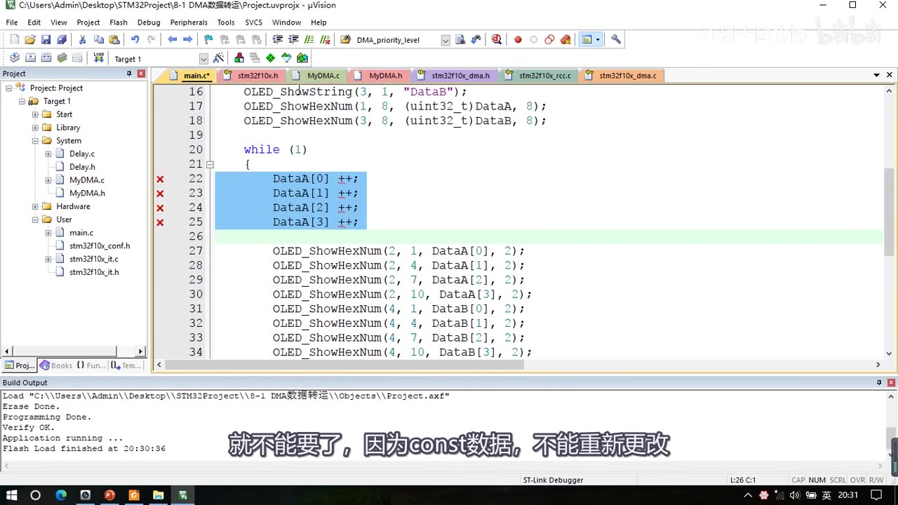
图 10：const 版改造——DataA 的 0～3 号元素各自 ++ 的四行被打上红叉（要删除，因为 const 数据不能改），下面是第 2 行 DataA、第 4 行 DataB 的显示语句；字幕「就不能要了，因为const数据，不能重新更改」
4. 程序二：8-2 DMA+AD多通道
4.1 接线与准备
- 接线图
8-2 DMA+AD多通道和上一节 AD 多通道一样：PA0 接电位器、PA1～PA3 接三个传感器模块的 AO 输出； - 从上一集的「AD 多通道」工程复制，改名
8-2 DMA+AD多通道，先编译一下；然后把上一个工程的 DMA 初始化整段复制过来、粘到 ADC 使能之前，并把开启 DMA 时钟的函数挪到前面（开时钟都放在一起）。
4.2 ADC 侧：扫描模式 + 4 个通道
- 执行流程就是 P23 最后一页「ADC 扫描模式 + DMA」：先扫描 PA0～PA3 这 4 个通道；
- 用 4 次
ADC_RegularChannelConfig把通道 0～3 填到序列 1～4 的位置（「菜单上的 1～4 号空位，我填上了 0～3 这 4 个通道」；通道和次序可以任意改，最终结果存放的顺序也会相应变化）； ADC_ScanConvMode = ENABLE（「告诉厨师我点了多个菜，不要只盯着第一个菜看」）；ADC_NbrOfChannel = 4（「告诉厨师我点的是 4 个菜，你看前 4 个位置就可以了」）；- 连续模式这里先用
DISABLE（单次扫描），后面再演示连续扫描。
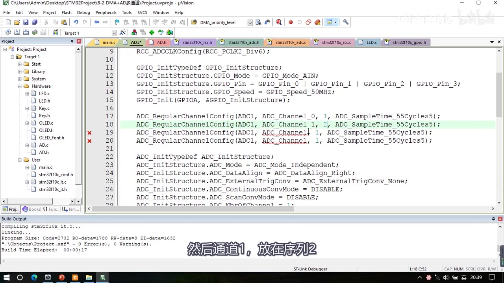
图 11：程序二 ADC.c——ADC_RegularChannelConfig(ADC1, ADC_Channel_0, 1, ADC_SampleTime_55Cycles5); 开始逐条填序列（第 18 行 ADC_Channel_1, 2 高亮，说明通道 1 放在序列 2），下面 ADC_Init 六成员；字幕「然后通道1，放在序列2」
4.3 DMA 侧参数：与程序一的区别
「DMA 你可以想象成服务员，ADC 这个厨师把菜做好了，DMA 这个服务员要尽快把菜端出来，防止被覆盖。」
| DMA_Init 成员 | 程序一（DataA→DataB） | 程序二（ADC→数组） | 说明 |
|---|---|---|---|
PeripheralBaseAddr |
AddrA（DataA） |
(uint32_t)&ADC1->DR |
端菜的源头是 ADC_DR（也可写 0x4001244C） |
PeripheralDataSize |
Byte |
HalfWord |
要 DR 低 16 位数据 |
PeripheralInc |
Enable |
Disable |
始终转运同一个寄存器 |
MemoryBaseAddr |
AddrB（DataB） |
(uint32_t)AD_Value |
目的地是 SRAM 数组 |
MemoryDataSize |
Byte |
HalfWord |
数组是 uint16_t |
MemoryInc |
Enable |
Enable |
存储器地址自增，4 个结果依次放 |
DIR |
PeripheralSRC |
PeripheralSRC |
外设站点作源 |
BufferSize |
Size |
4 |
4 个 ADC 通道，转运 4 次 |
Mode |
Normal |
Normal（版本 A）/Circular（版本 B） |
单次/循环 |
M2M |
Enable |
Disable |
程序二用硬件触发 |
Priority |
Medium |
Medium |
一个通道，随便给 |
DMA_Init 通道 |
DMA1_Channel1 |
DMA1_Channel1（必须是它） |
ADC1 的硬件触发只接在 DMA1 通道 1 |
- 为什么必须用通道 1：看 P23 的「图22 DMA1请求映像」——ADC1 的硬件触发只接在了 DMA1 的通道 1 上，「所以这里通道必须要使用 DMA1 的通道 1，其他的通道都不行」；这也解释了「同一通道有多个触发源时，具体用哪个取决于你把哪个外设的 DMA 输出开启了」。
- 必须先开 ADC 的 DMA 输出：在 ADC 使能之前要
ADC_DMACmd(ADC1, ENABLE);——这个函数就是用来开启 ADC 到 DMA 的触发信号输出的；不开启的话 DMA 收不到硬件触发信号。
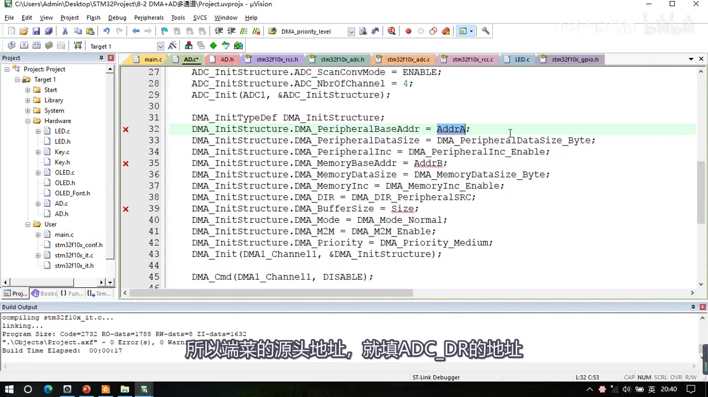
图 12：程序二 ADC.c——ADC_ScanConvMode = ENABLE;（此帧高亮在下面的 DMA_PeripheralBaseAddr = AddrA;）、ADC_NbrOfChannel = 4;、ADC_Init(...)，下面是刚粘贴过来的 DMA 初始化块（PeripheralBaseAddr = AddrA; 还被标红叉、M2M_Enable 等仍是程序一的参数，待逐个改）；字幕「所以端菜的源头地址，就填ADC_DR的地址」
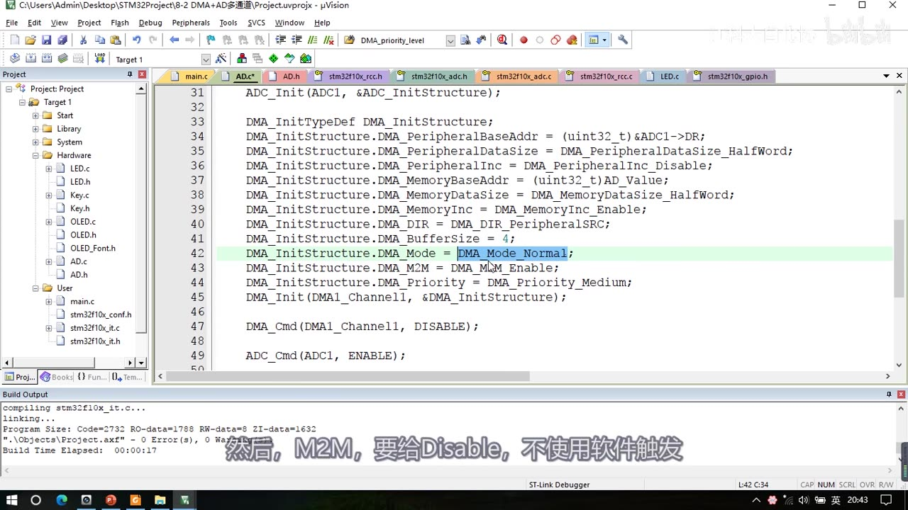
图 13：程序二 DMA 参数块——PeripheralBaseAddr = (uint32_t)&ADC1->DR;（此帧高亮在 DMA_Mode = DMA_Mode_Normal;）、PeripheralDataSize_HalfWord、PeripheralInc_Disable、MemoryBaseAddr = (uint32_t)AD_Value;、MemoryDataSize_HalfWord、MemoryInc_Enable、DIR_PeripheralSRC、BufferSize = 4;、Mode 正在改、M2M = DMA_M2M_Enable（此刻仍是中间态，随后要改 Disable）、Priority_Medium、DMA_Init(DMA1_Channel1, …)、DMA_Cmd(DISABLE)；字幕「然后，M2M，要给Disable，不使用软件触发」
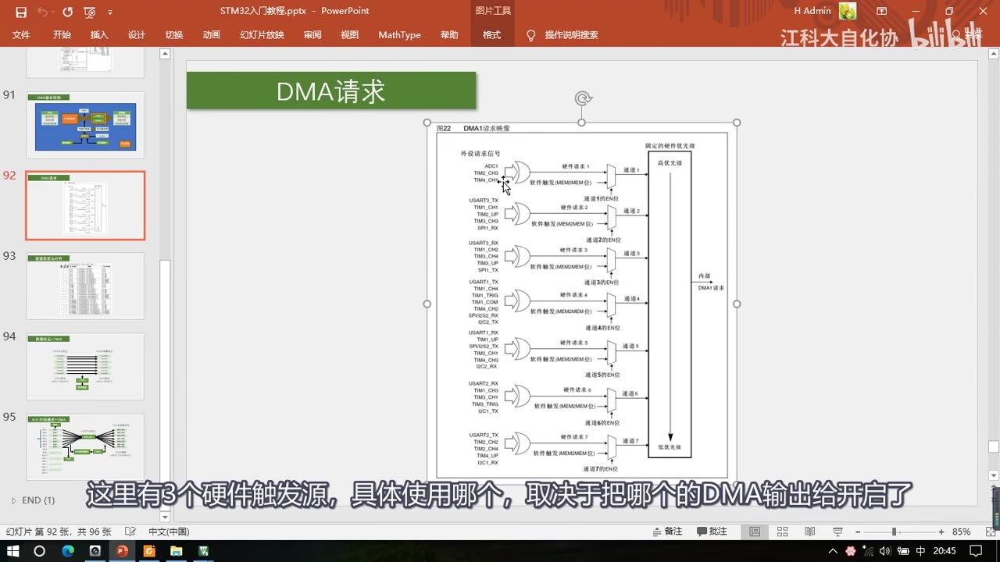
图 14：PPT「DMA请求」——图22 DMA1请求映像：左边外设请求信号（ADC1/TIM2_CH3/TIM4_CH1 → 通道1；USART3_TX… → 通道2；…），右边「固定的硬件优先级」→「内部DMA1请求」；字幕「这里有3个硬件触发源，具体使用哪个，取决于把哪个的DMA输出给开启了」
4.4 使能与软件触发流程
DMA_Cmd(DMA1_Channel1, ENABLE); /* DMA 先使能 */
ADC_DMACmd(ADC1, ENABLE); /* 开启 ADC 的 DMA 请求输出 */
ADC_Cmd(ADC1, ENABLE); /* ADC 上电 */
ADC_ResetCalibration(ADC1);
while (ADC_GetResetCalibrationStatus(ADC1) == SET);
ADC_StartCalibration(ADC1);
while (ADC_GetCalibrationStatus(ADC1) == SET);
- DMA 先使能也不会立刻工作：三个条件里「计数器不为 0」满足，但「触发源有信号」不满足——因为这里是硬件触发，ADC 还没启动、不会有触发信号。
- 所以还需要 ADC 触发：单次扫描版里，
AD_GetValue的参数和返回值都不需要了，改成void AD_GetValue(void)：
void AD_GetValue(void)
{
DMA_Cmd(DMA1_Channel1, DISABLE); /* DMA 是单次模式，先失能 */
DMA_SetCurrDataCounter(DMA1_Channel1, 4); /* 重新写入传输计数器 */
DMA_Cmd(DMA1_Channel1, ENABLE);
ADC_SoftwareStartConvCmd(ADC1, ENABLE); /* 软件触发 ADC 开始转换 */
while (DMA_GetFlagStatus(DMA1_FLAG_TC1) == RESET); /* 等 DMA 转运完成 */
DMA_ClearFlag(DMA1_FLAG_TC1);
}
- 要点：因为 ADC 还是单次模式、DMA 也是单次模式，所以每次调用前要重新写传输计数器；等待只等 DMA 完成即可——「因为转运总是在转换之后的」，原来等待 ADC 转换完成（EOC）的代码就不需要了；
- 调用一次
AD_GetValue：ADC 开始转换、连续扫描 4 个通道 → AD 转换结果依次放进AD_Value数组；之后 main 里直接读AD_Value[0]～[3]（AD_Value[0]是序列 1 即通道 0 的结果，以此类推）；数组要在头文件里用extern声明成外部可调用的数组。
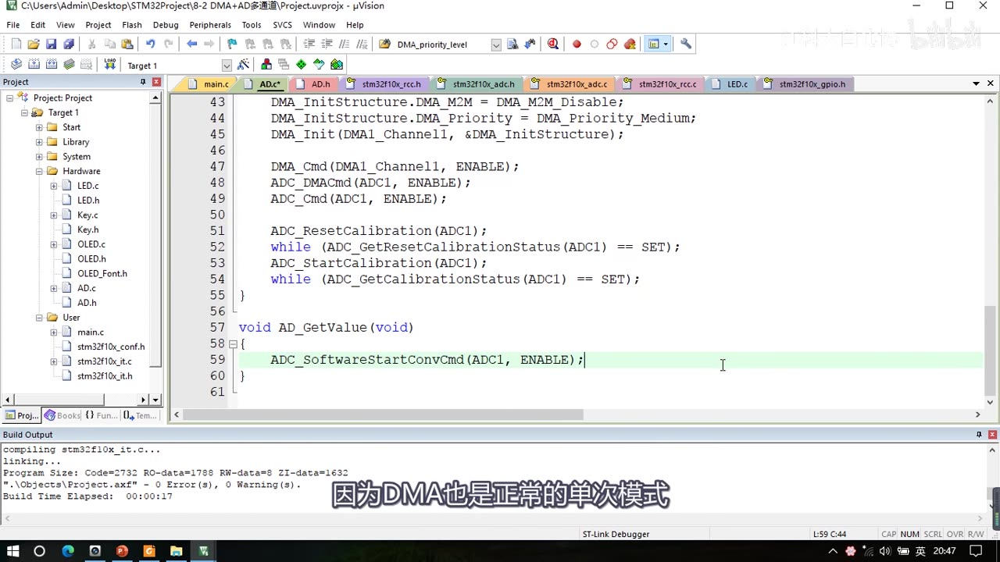
图 15：程序二 ADC.c 尾部——DMA_M2M = DMA_M2M_Disable;（最终值）、Priority_Medium、DMA_Init(DMA1_Channel1, …)、DMA_Cmd(DMA1_Channel1, ENABLE);、ADC_DMACmd(ADC1, ENABLE);、ADC_Cmd(ADC1, ENABLE);、校准四步，下面是 void AD_GetValue(void) { ADC_SoftwareStartConvCmd(ADC1, ENABLE); }（正在改）；字幕「因为DMA也是正常的单次模式」
4.5 版本 A 现象（单次扫描 + 单次转运）
- OLED 显示 4 个通道的结果：
AD0:2763、AD1:1329、AD2:1943、AD3:4020，随电位器/光敏（遮挡）/热敏（加热）/红外（靠近）各自变化——「这就是 ADC 单次扫描 + DMA 单次转运的模式」。
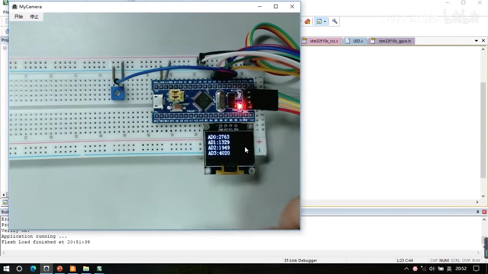
图 16：程序二现象——OLED 显示 AD0:2763、AD1:1329、AD2:1943、AD3:4020，手正放在传感器附近
4.6 版本 B：连续扫描 + 循环转运（最终版）
- 改三处：ADC 连续模式打开（
ADC_ContinuousConvMode = ENABLE）；DMA 循环模式打开（DMA_Mode_Circular）；把 ADC 的软件触发直接放到初始化最后一行（ADC_SoftwareStartConvCmd(ADC1, ENABLE);放初始化末尾）； - 效果：ADC 触发之后，ADC 连续转换、DMA 循环转运，两者一直在工作，始终把最新的转换结果刷新到 SRAM 数组里——想要数据的时候随时去数组里取就行了；
- 所以最后面那个
AD_GetValue函数完全不需要了：头文件里删掉、主函数里也删掉，主循环啥都不干，直接读AD_Value数组就能得到结果； - 现象照样能完成 AD 多通道转换——「这就是 ADC 连续扫描 + DMA 循环转运的程序代码」。
/* 版本 B 与版本 A 的差别（只列改动点） */
ADC_InitStructure.ADC_ContinuousConvMode = ENABLE; /* ADC 连续转换 */
DMA_InitStructure.DMA_Mode = DMA_Mode_Circular; /* DMA 循环模式 */
/* 初始化最后一行： */
ADC_SoftwareStartConvCmd(ADC1, ENABLE);
/* 删除 AD_GetValue()，主循环直接读 AD_Value[0～3] */
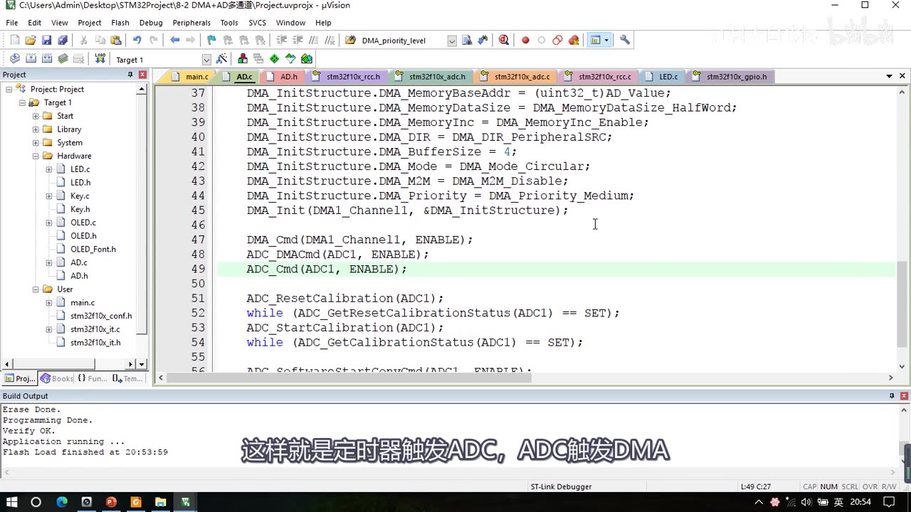
*图 17：连续 + 循环最终版——Mode = DMA_Mode_Circular;（此帧高亮在 ADC_Cmd(ADC1, ENABLE);）、M2M_Disable、DMA_Init、DMA_Cmd(ENABLE)、ADC_DMACmd(ADC1, ENABLE)、ADC_Cmd(ADC1, ENABLE)、校准四步，最后一行 ADC_SoftwareStartConvCmd(ADC1, ENABLE);（放在初始化末尾）；字幕「这样就是定时器触发ADC，ADC触发DMA」*
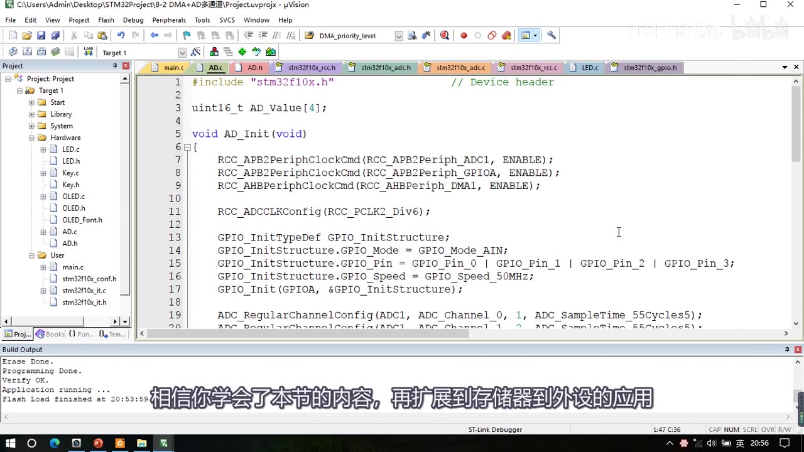
图 18：程序二 ADC.c 开头（最终版）——uint16_t AD_Value 数组（4 个元素）、void AD_Init(void)、RCC_APB2PeriphClockCmd(ADC1/GPIOA)、RCC_AHBPeriphClockCmd(RCC_AHBPeriph_DMA1)、RCC_ADCCLKConfig(RCC_PCLK2_Div6);、GPIO_Mode_AIN、GPIO_Pin_0 | GPIO_Pin_1 | GPIO_Pin_2 | GPIO_Pin_3、GPIO_Speed_50MHz；字幕「相信你学会了本节的内容，再扩展到存储器到外设的应用」
5. 程序二两套最终代码对比
| 项 | 版本 A：单次扫描 + 单次转运 | 版本 B：连续扫描 + 循环转运 |
|---|---|---|
ADC_ContinuousConvMode |
DISABLE（单次扫描） |
ENABLE（连续扫描） |
DMA_Mode |
DMA_Mode_Normal |
DMA_Mode_Circular |
| ADC 软件触发位置 | 在 AD_GetValue() 里 |
初始化末尾触发一次 |
AD_GetValue() |
有（void，每次调用：DMA 失能→写计数器→使能→触发 ADC→等 TC1→清标志） | 没有（删除） |
| 主循环 | 先调 AD_GetValue()，再读 AD_Value[0～3] |
直接读 AD_Value[0～3] |
| 数据新鲜度 | 每次调用刷新一次 | 数组里始终是最新结果 |
6. 硬件自动化的意义（本集小结）
- 版本 B 之后，硬件外设已经实现了相互配合和高度的自动化：各种操作都是硬件自己完成的，极大地减轻了软件负担——软件什么都不需要做，也不需要进任何中断，硬件自动就把活干完了；
- 还可以再加一个外设：ADC 用单次扫描、再用定时器定时触发——这样就变成 定时器触发 ADC、ADC 触发 DMA，整个过程完全自动、不需要程序手动操作；
- 这就是 STM32 中硬件自动化的一大特色：各个外设互相连接、互相交织，形成网状结构，而不是传统的「一个 CPU 单独控制多个独立外设」；
- 之前的学习里也经常遇到这种设计：定时器的输出可以通向 ADC、DAC 或其他定时器；ADC 的触发源可以来自定时器或外部中断；DMA 的触发源可以来自 ADC、定时器、串口等——这样完成某些简单且繁琐的工作时可以自动完成，既减轻 CPU 负担、又大大提高外设性能。
- 本集覆盖了 存储器→存储器、外设→存储器 两种情况；存储器→外设（比如串口发送一批数据）本集没讲，作者留给大家自己研究（「学会了本节的内容，再扩展应该也是没问题的」）。
坑与易错点
const数据不能改：DataA 加const后DataA[0]++必须删掉，否则编译报错；const 数据在 Flash 里，可读不可写。const的地址 08 开头、变量 20 开头：Flash 区有程序代码，所以常量地址会靠后且有偏移，不像 SRAM 那样从第一个位置开始。- DMA 是 AHB 设备：开时钟要用
RCC_AHBPeriphClockCmd，不是 APB2/APB1。 DMA_Init第一个参数是DMAy_Channelx：一个参数同时选 DMA 和通道（DMA1 通道 1～7、DMA2 通道 1～5）。- 存储器到存储器、软件触发时通道可任选；但硬件触发必须用绑定通道（ADC1 → DMA1 通道 1），选错通道收不到触发。
- 写传输计数器前必须先失能 DMA：
DMA_Cmd(DISABLE)→DMA_SetCurrDataCounter→DMA_Cmd(ENABLE)。 - TC 标志位必须手动清除：
DMA_ClearFlag(DMA1_FLAG_TC1);，否则下次判断会误以为已完成。 - 循环模式不能用于存储器到存储器：库函数注释明确写「循环模式不能应用在 M2M 情况下」，即自动重装与软件触发不能同时用。
- 程序一的
M2M = Enable、程序二的M2M = Disable：前者是软件触发（数组转运），后者是硬件触发（ADC 触发）——两个程序不要抄混。 - 程序二必须调用
ADC_DMACmd(ADC1, ENABLE)：不开这个，ADC 的 DMA 请求不会输出，DMA 永远等不到硬件触发。 - 程序二通道固定为 DMA1_Channel1：ADC1 的硬件触发只接在通道 1（图22）；同时明确是哪个触发源取决于开启了哪个外设的 DMA 输出。
- DMA 先使能不会立刻工作：硬件触发模式下，ADC 没启动就没有触发信号，三条件不满足。
- 版本 A 要等 DMA 完成而不是等 ADC 的 EOC：因为转运总在转换之后，等
DMA1_FLAG_TC1即可——原来 AD_GetValue 里等 EOC 的代码可以删。 - 版本 B 删掉
AD_GetValue后别忘了改主循环：直接读AD_Value[]，否则编译报错/读不到新数据。 - 数组地址偏移不是 DMA 造成的：
0x20000002是因为全局MyDMA_Size占了 SRAM 开头 2 字节，属编译器分配结果。 AD_Value要在头文件extern声明，main 才能访问。- 本集没讲 DMA 中断：
DMA_ITConfig只在库函数列表里出现，未配置；存储器到外设（串口发送）也留作自学。 - DataA/DataB 初始值别写错：全 0 可省略不写（全局变量默认 0），但写了更直观。